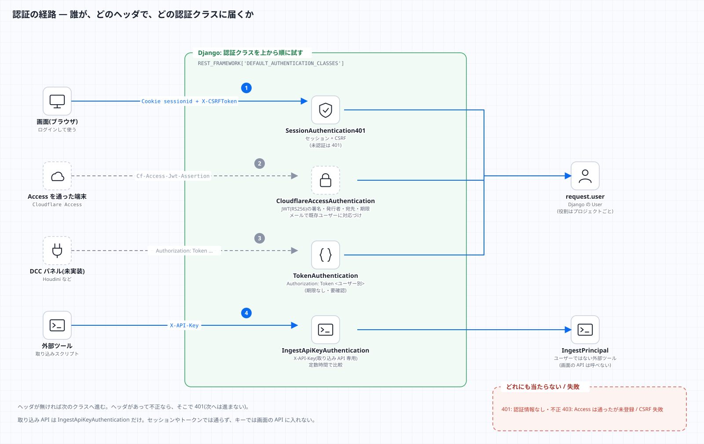

認証と、差し替え口(Phase 6)
今の認証
| 用途 | 方式 | 備考 |
|---|---|---|
| 画面 → API | Django のセッション + CSRF | 未認証は 401(SessionAuthentication401)。ログイン自体も CSRF を検査する(ログイン CSRF 対策) |
| DCC パネル等 → API | Authorization: Token <ユーザー別トークン> |
python manage.py drf_create_token <username> で発行。-r を付けると再発行(古いものは無効) |
| 外部ツール → 取り込み API | X-API-Key |
取り込み API 専用。画面の API には使えない。INGEST_API_KEYS に無ければ(空なら)常に 401 |

画面のログイン(セッション + CSRF)
ログインの総当たり対策
POST /auth/login/ は、IP(X-Forwarded-For があればその値)ごとに 10 回/分(LOGIN_THROTTLE_RATE で変更)。超えると 429 {"code": "throttled"}。
キャッシュはプロセスごと(既定の LocMemCache)なので、gunicorn のワーカー数だけ実質の上限は緩くなる。厳密に制限するなら共有キャッシュ(Redis など)を使う。
Cloudflare Access の背後では、そもそも Access を通った人だけがここに届く。
Cloudflare Access(OIDC)で認証する(任意・既定は無効)
設計書の追補「認証は Cloudflare Access(OIDC)」に対応する認証クラス tracker.cf_access.CloudflareAccessAuthentication。
Access を通ったリクエストに付く Cf-Access-Jwt-Assertion(署名つき JWT)を検証し、メールアドレスで既存のユーザーに対応づける。
有効にする(環境変数)
CF_ACCESS_TEAM_DOMAIN=myteam.cloudflareaccess.com # チームのドメイン(https:// は付けても付けなくてもよい)
CF_ACCESS_AUD=<Access のアプリケーションの AUD タグ>
CF_ACCESS_AUTO_CREATE=0 # 未登録のメールのユーザーを自動で作るか(既定 0)
API_AUTHENTICATION_CLASSES=tracker.auth.SessionAuthentication401,tracker.cf_access.CloudflareAccessAuthentication,rest_framework.authentication.TokenAuthentication
チームのドメインと AUD の両方が無ければ、ヘッダがあっても何もしない(うっかり有効にならない)。
守っていること(全てテストあり: tests/test_cf_access.py)
| 項目 | 内容 |
|---|---|
| 署名・発行者・宛先・期限 | 全て必須。RS256 だけ許可(none / HS256 の差し替えは 401)。公開鍵は https://<チーム>/cdn-cgi/access/certs から取って 1 時間キャッシュ |
| ヘッダの偽装 | 別の鍵で署名したものは 401(Cloudflare の秘密鍵が無ければ作れない) |
| 未登録のメール | 403(自動では作らない)。CF_ACCESS_AUTO_CREATE=1 で作る場合も、どのプロジェクトのメンバーでもないので何も見えない(最小権限) |
| メールが一意でない | 403(同じメールのユーザーが複数、または無効なユーザーのみ) |
| CSRF | 変更系(POST など)は、セッションと同じく CSRF を検査。Access のクッキーはブラウザが自動で送るため |
| 失敗の理由 | 利用者には「確認できません」とだけ返す。詳細(鍵が取れない・期限切れ)はサーバーのログだけ |
注意
- 実際の Cloudflare では未検証。手元で作った RSA 鍵で署名したトークンでの確認まで。実環境で 1 回、AUD とチームのドメインを入れて確かめること(security.md の F10)。
- ユーザーは事前に作っておく(管理画面で、Access と同じメールアドレスを登録し、プロジェクトのメンバーにする)。
- Access で入った人のログアウトは Access 側(
/cdn-cgi/access/logout)。画面の「ログアウト」はアプリのセッションだけを消す。 /admin/(Django の管理画面)は、このクラスの対象外(Django の通常のログイン)。Access のアプリケーションで入口を保護する。
差し替え口
認証クラスは環境変数で入れ替えられる(config/settings.py):
API_AUTHENTICATION_CLASSES=tracker.auth.SessionAuthentication401,rest_framework.authentication.TokenAuthentication
外部 ID 基盤(例: Firebase Auth)を足すには:
rest_framework.authentication.BaseAuthenticationを継承したクラスを書く(Authorization: Bearer <IDトークン>を検証し、Userを取得または作成して(user, token)を返す)。- そのクラスのパスを
API_AUTHENTICATION_CLASSESに追加する。 ProjectMemberの役割(role)は今まで通り Django のUserに紐づくので、ビュー・権限の変更は不要。
Firebase は実装していない(設計書どおり、Django の認証と ORM を学ぶため)。上は差し込み位置の説明であり、動作確認はしていない。